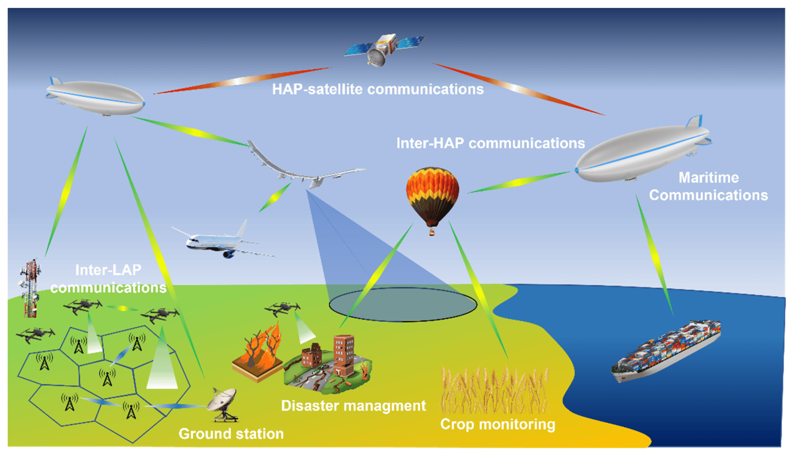

Karan Gupta
"While the Board said it will no longer offer subject tests to US students effective immediately, it will phase them out for international students by summer students. We're adapting to respond to the changing needs of students and colleges. This change simply streamlines the process."
SAT discards subject tests & essay to 'reduce burden', 50 mins shorter now
Mumbai: The College Board, the New York-based organization that runs the Scholastic Aptitude Test, has scrapped its subject tests and announced its decision to do away with the optional essay, thus making the main SAT 50 minutes shorter in duration, reports Hemali Chhapia.
Candidates are admitted based on SAT scores for undergraduate admissions in the US and to 40 universities in India, private and deemed. The subject tests were 20 multiple-choice standardized. In case of the essay too, top universities have found that essay scores are not useful or essential for admission.
Why the Shift Matters for Indian Applicants
For years, Indian students have relied on SAT subject tests to showcase their prowess in STEM subjects. The removal of these tests means that students must now focus more on their school grades (GPA) and other standardized metrics like the AP (Advanced Placement) exams.
Counselors suggest that this move "levels the playing field" but also puts more pressure on school transcripts. "Colleges are looking at the student as a whole, not just a score on a Saturday morning," says a leading educationist in Mumbai.
Education Reforms: The Road Ahead
With the landscape of standardized testing changing, experts are now pointing towards a more skill-based evaluation system. The focus is shifting from memorization to critical thinking and problem-solving.
"We want students who can apply knowledge, not just repeat it," said a spokesperson for the Education Ministry. This shift is expected to influence how schools in India structure their final year portfolios.

APS GAIN GROUND
- SAT scores for UG admissions in the US, 40 varsities in India Subject tests 20 MC questions for individual subjects.
- But Advanced Placement Testing Programme overlapped in its aim with subject tests questions for individual subjects, taken to improve credentials.
- In April 2014 when the deal was registered the market value of the land was Rs 4.14 crore but Rashmi Thackeray and Manisha Waikar purchased it for only Rs 2.1 crore.